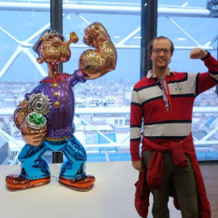
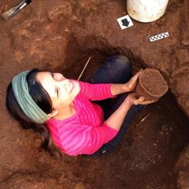

Open Glossary
This glossary is designed to to be a resource to help inform people about the culture of ‘open scholarship’.
- Accessibility
- refers to the degree of access. Defined by an end-user basis, depending on their ability to understand or reuse content.

- Altmetrics
- Altmetrics are alternative ways of recording and measuring the use and impact of scholarship. Rather than solely counting the number of times a work is cited in scholarly literature, alternative metrics also measure and analyze social media (e.g., Facebook, Twitter, blogs, wikis, etc.), document downloads, links to publishing and unpublished research, and other uses of research literature, in order to provide a more comprehensive measurement of scholarships reach and impact.
- Annotation
- a comment with specific location and context, either inline or in the margin of a text document, or within a region of an image or video, or located within a specific row or cell of data in a data set.
- AnnotatorJS / Hypothes.is
- A framework and application for annotating resources online according to an emerging W3C standard for web annotations. Focus is on scholarly applications. (Source Annotator / Source Hypothes.is)
- Apache License
- A free software license by the Apache Software Foundation.
- Article-level metrics
- all types of article-level metrics including download and usage statistics, citations, and article-level altmetrics.
- Article Processing Charge (APC)
- a fee charged to the author, creator, or institution to cover the cost of an article, rather than charging the potential reader of the article. APCs may apply to both commercial and Open Access publications. APCs are sometimes charged to authors in order to cover the cost of publishing and disseminating an article in an Open Access scholarly journal.
- Athens
- A sign-in system that provides access to library resources.
- Author Addendum
- An author addendum is a supplemental or added agreement to a publishing contract that defines or changes the terms of the contract, often focusing on the transfer of copyright ownership. For authors of scholarly works, an author addendum to a publisher’s standard publication contract may be necessary to help ensure that authors protect important rights, such as the right to post their articles online to a personal website or in a digital repository; the right to use their works within a classroom setting; or the right to use their works as the foundation for future research.
- Bibliometrics
- Bibliometrics is the branch of library and information science concerned with the application of mathematical and statistical analysis to bibliography. Bibliometrics involves the statistical analysis of books, articles, or other publications.
- Bitbucket
- Free source code hosting site.
- BSD (Berkeley Software Distribution)
- A family of UNIX-like operating systems.
- CC Attribution (BY)
- a licence clause that allows the reuse, sharing, and remixing of materials providing the original author is appropriately attributed. Aside from attribution the CC-BY licence has no other restrictions on copying. Compatible with free cultural works.
- CC NoDerivatives (ND)
- a licence clause requiring that derivatives are not made of the original works. Not compatible with free cultural works.
- CC NonCommercial (NC)
- a licence clause allowing the reuse, sharing, and remixing of materials providing that it is for non-commercial purposes. Not compatible with free cultural works.
- CC Zero (CC0)
- waiver of copyright; no rights reserved. Places content as openly as possible in the public domain. The only GPL-compatible license, therefore can be used for software. The Unlicense may be a simpler alternative in some cases
- Citation
- a reference to a published or unpublished source embedded in content, for the purposes of acknowledging the work and relevance of others to the topic of discussion where the citation appears.
- Comma-Separated Values, or Character-Separated Values (CSV)
- a plain-text (non-binary) format for tabular data.
- Computational reproducibility
- when publishing computational findings, include details and access to the underlying code, data, and implementation.
- Content mining
- large-scale extraction of information from content (e.g., photographs, videos, audio, metadata), usually involving thousands of items.
- Copy editing
- a type of editing designed to improve the formatting, style, and accuracy of text. It usually does not involve changing the content of the original text.
- Copyleft
- a form of licensing that makes a creative work freely available to be modified, and requiring all modified and extended versions of the creative work to be free as well. Open Access does not require works to be copyleft, nor does it necessarily exclude copyleft works from being open access. The recommended licence (CC-BY) for academic publishing is not copyleft.
- Copyright
- The aspect of Intellectual property that gives creators the right to permit (or not permit) what happens to their creations, as opposed to trademark rights or moral rights.
- Creative Commons
- A suite of licences that set out the rights of authors and users, providing alternatives to the standard copyright. CC licences are widely used, simple to state, machine readable and have been created by legal experts. There are a variety of CC licences, each of which use one or more clauses, examples of which are given below. Some licences are compatible with Open Access in the Budapest sense, and some are not. (Choosing a license)
- Creative work
- An original, identifiable piece of content, such as an academic paper, a diagram, a photograph, or a video clip. Owners of creative works have rights, such as copyright, that they might reserve to keep control of the content, or relinquish to allow others to share and reuse that content.
- CrossRef
- an association of scholarly publishers that develops shared infrastructure to support more effective scholarly communication.
- Curation
- the selection, preservation, maintenance, collection and archiving of [digital] assets. Curation establishes, maintains, and adds value to repositories of digital data for present and future use.
- Data archiving
- the process of moving data to a storage device for long-term preservation.
- Databib
- a searchable registry of research data repositories. [Note that the Databib and re3data.org registries will merge by the end of 2015]
- Data mining
- an analytic process designed to explore data in search of consistent patterns and/or systematic relationships between variables, and then to transform this information into content for future use.
- DataONE
- a framework and infrastructure for Earth observational data.
- Department of Energy (DOE)
- A federal agency addressing US energy, environment, and nuclear challenges. (Public Access Policy)
- Derivative work
- A work based upon one or more pre-existing works, such as a translation, musical arrangement, dramatization, fictionalization, motion picture version, sound recording, art reproduction, abridgment, condensation, or any other form in which a work may be recast, transformed, or adapted.
- Diamond OA
- a form of gold open access in which there is no author fee (APC).
- Digital Object Identifier (DOI)
- a unique text string that is used to identify digital objects such as journal articles or open source software releases.
- Double blind peer review
- when the reviewers don’t know who the authors are, and vice versa.
- Double-dipping
- In the context of Open Access, double-dipping occurs when a journal has an article processing charge (APC) for publishing an author’s work, as well as requiring payment (usually through a subscription fee) by the potential user of the work. This model makes the institution or author pay twice to access the work.
- Dryad
- a curated resource that makes the data underlying scientific publications discoverable, freely reusable, and citable.
- DSpace
- a software for digital open repositories launched by The Massachusetts Institute of Technology (MIT) in 2002.
- Embargo period
- a length of time imposed on a research output for users who have not paid for access, or do not have institutional access, before it is made freely available.
- Empirical reproducibility
- the reproduction of results to obtain ‘verifiable facts’, through improving existing communication standards and reporting.
- Eprint
- a digital version of a research document available online for a repository.
- Eprints
- a software for open digital repositories to self-archiving launched by Southampton University in 2000.
- Epub
- A free and open e-book standard by the International Digital publishing Forum.
- Etherpad
- An online, open source collaborative writing/editing tool operating in real time.
- Extensible Markup Language (XML)
- A language that defines a set of rules for encoding documents in a format that is readable by both machines and humans.
- Fee waiver
- If an institution, research funder or author cannot pay for an Article Processing Charge, many publishers or journals will offer partial or total waiving for fees.
- figshare
- a repository where users can make all of their research outputs available in a citable, shareable, and discoverable manner.
- Flexible Extensible Digital Object and Repository Architecture (FEDORA)
- a software for digital repositories launched by The Cornell and Virginia Universities in 2003.
- Funder
- an institute, corporation or government body that provides financial assistance for research.
- Gates Foundation
- A funding body co-ordinated by Melinda and Bill Gates. (Open Access policy)
- Genbank
- the NIH sequence database comprising an annotated collection of all publicly available DNA sequences. Part of the International Nucleotide Sequence Database Collaboration.
- GitHub
- a web-based service that provides a source code repository that works exclusively with the Git command-line tool.
- Git
- an open-source, distributed revision control system.
- Global Biodiversity Information Facility (GBIF)
- contains data about all types of life on Earth, published according to common data standards.
- GNU GPL (General Public License)
- A free copyleft license for software and other kinds of works
- Gold OA
- making the final version of manuscript freely available immediately upon publication by the publisher.
- Gratis OA
- the paper is available to read free-of-charge, though its reuse is still restricted, for example by ‘All Rights Reserved’ copyright.
- Green OA
- making a version of the manuscript freely available in a repository.
- Higher Education Funding Council for England (HEFCE)
- a funding body for higher education, universities and colleges in England. (Open Access policy)
- H-index
- a personal metric that relates the number of citations to the number of published papers for an academic.
- Hybrid journal
- Some traditional journals offer an option for authors to make their individual articles freely accessible to anyone worldwide, for an additional fee. Other articles in the journal remain accessible only through subscription. Such journals are known as “hybrid journals.”
- Hybrid
- a type of journal in which certain articles are made open access for typically a significantly higher price (relative to full OA journals), while others remain toll access.
- Hypertext Markup Language (HTML)
- the set of markup symbols or codes inserted in a file intended for display on a browser page.
- Impact factor
- a numerical measure that indicates the average number of citations to articles published over the previous two years in a journal, and frequently used as a proxy for a journal’s relative importance.
- Impact
- the scale of use of research outputs both inside and outside of academia.
- Institutional Repository
- An online database designed to collect the intellectual output of a particular institution or university, including digital collections such as electronic theses and dissertations (ETDs), pre-prints, or faculty scholarship, and presents associated metadata regarding the these items.
- Intellectual property (IP)
- a legal term that refers to creations of the mind. Examples of intellectual property include music, literature, and other artistic works; discoveries and inventions; and phrases, symbols, and designs.
- Intellectual Property Rights (IPR)
- the rights given to the owners of intellectual property. IPR is protected either automatically (eg copyright, design rights) or by registering or applying for it (eg trademarks, patents). Protecting your intellectual property makes it easier to take legal action against anyone who steals or copies it. IPR can be legally sold, assigned or licenced by the creator to other parties, or joint-owned.
- IPython notebook
- a web-based interactive computational environment where you can combine code execution, text, mathematics, plots and rich media into a single document.
- Joint Information Systems Committee (JISC)
- A UK educational charity, formerly the of HEFCE but now independent. Provides expertise to universities, colleges and cultural institutions on the use of technology to support research, including publication models, repositories, licensing, and infrastructure.
- Journal Article Tag Suite (JATS)
- a common XML format in which publishers and archives can exchange journal content.
- Journal level metrics
- metrics that apply to all papers published within a journal. A common example is Thomson Reuters’ journal impact factor.
- Journal
- an aggregation of published research articles. Historically divided into volumes and issues.
- Journal to Wiki publication (J2W)
- Copying text from a published paper to a wiki (such as Wikipedia or Wikibooks), with attribution: legally possible if the licence of the paper is less restrictive than the licence of the wiki.
- Knowledge Network for Biocomplexity (KNB)
- a network for the discoverability, access, and interpretation of complex ecological data.
- LaTeX
- a markup language for typesetting documents, particularly common in mathematics and the sciences. Many academic journals accept submissions in LaTeX.
- Legacy publisher
- a publisher that historically has operated on a paywall-based business model.
- Library-based publishing
- Many academic libraries are now beginning to act as publishers for scholarly works produced in their institutions and elsewhere. In some cases, the library works with the university scholarly press to publish works. In other cases, the library publishes works independently or separately from the academic press. Library-based publishers are often strongly in favor of Open Access. (Library Publishing Coalition)
- Libre OA
- the paper is made available under an open licence, allowing it to be shared and reused, depending on which licence is used. (Libre and Gratis refer to copyright and licensing restrictions)
- Loginwall
- the requirement to log in to a system in order to access content.
- Machine Readable Cataloguing (MARC)
- a set of digital formats for the description of items catalogued by libraries.
- Machine readable
- data or metadata in a format that can be understood by a computer.
- Mandate
- an authority to carry out a policy. In this context, largely to conform to open access policies.
- Map of Open Educational Resource Repositories
- Map containing locations for items in the directory of Open Educational Resource Repositories.
- Markdown
- a syntax for adding formatting to documents allowing correctly formatted articles to be written in plain text.
- Max Planck Society
- a German research organisation with 82 Institutes worldwide. (Open Access policy)
- Megajournal
- a journal with editorial criteria based on scientific soundness instead of a priori estimated newsworthiness or ‘impact’.
- MIT License
- An open and permissive software license.
- Mixed citation
- a textual, bibliographic description of a work that is cited within text.
- Morphbank
- an image database documenting a range of specimen-based research, including comparative anatomy and taxonomy. Funded by the National Science Foundation.
- Morphobank
- a web application for collaborative evolutionary research, specifically phylogenetic systematics or cladistics, involving morphology.
- National Institute of Health (NIH)
- The national medical research agency in the USA. (Public Access policy)
- National Science Foundation (NSF)
- an independent federal agency in the USA for the funding of research. (Public Access policy)
- OAI Media Importer Bot
- A computer program, run by Daniel Mietchen, that takes figures and video clips from Open Access articles in PubMed, and copies them to Wikimedia Commons with full attribution of the original paper. This facilitates the reuse of those files in educational materials or Wikipedia articles.
- Open access journal
- a journal that exclusively comprises open access articles.
- Open Access (OA)
- making peer reviewed scholarly manuscripts freely available via the Internet, permitting any user to read, download, copy, distribute, print, search, or link to the full text of these articles, crawl them for indexing, pass them as data to software, or use them for any lawful purpose, without financial, legal or technical barriers other than those inseparable from gaining access to the internet itself. The only constraint on reproduction and distribution, and the only role for copyright in this domain, should be to give authors control over the integrity of their work and the right to be properly acknowledged and cited. May also refer to theses, books, book chapters, monographs and other content. (BOAI)
- Open Access Movement (OAM)
- a global movement started in the late 1990s and early 2000s fuelled by the widespread public access to the World Wide Web. Its prime objective is the free and unrestricted access and reuse of the world’s knowledge.
- Open access publisher
- a publisher that publishes all research articles as open access articles. Most legacy publishers have options to make journals at least partially open access.
- Open Access Scholarly Publishers Association (OASPA)
- represents the interests of open access journal and book publishers in all scientific, technical, and scholarly disciplines.
- Open Access Week
- a global event promoting open access as a new norm in scholarship and research.
- OpenAIRE
- a pan-European infrastructure that supports the EC’s Open Access Mandate in Horizon2020. All publications funded by the EC should be made available in Open Access and OpenAIRE harvests from a range of data sources namely repositories, OA publishers.
- Open Archives Initiative (OAI)
- develops and promotes interoperability standards that aim to facilitate the efficient dissemination of content.
- Open Archives Initiative
- Supplies a common framework to web communities that allows them to gain access to content in a standard manner by means of metadata harvesting.
- Open Conference Systems (OCS)
- a free Web publishing tool that will create a complete Web presence for scholarly conferences.
- Open Con
- student and early career researcher conference on open access, open data, and open education. Launched November, 2014. (Resources)
- Open data
- making data freely available on the public internet permitting any user to download, copy, analyse, re-process, pass them to software or use them for any other purpose without financial, legal, or technical barriers other than those inseparable from gaining access to the internet itself. (Panton Principles)
- Open Educational Resources (OER)
- high quality, openly licensed, online educational materials for sharing, use, and reuse. They act as a mechanism for instructional innovation as networks of teachers and learners share best practices.
- Open Harvester Systems
- a free metadata indexing system.
- Open Journal Systems (OJS)
- a journal management and publishing system.
- Open Knowledge Festival
- annual event hosted by Open Knowledge that brings together the international open community (topics include open data, open government, open science, open economics).
- Open Knowledge-run Open Science mailing list
- Open lab notebooks
- a concept of blogging about research on a regular basis, such that research notes and data are accumulated and published online as soon as they are obtained.
- Open Monograph Press
- an open source software platform for managing the editorial workflow required to see monographs, edited volumes, and scholarly editions through internal and external review, editing, cataloguing, production and publication.
- Open review
- when reviews are made openly available, typically alongside the article.
- Open Science Framework
- A tool created by the Center for Open Science for scientists. It is both a research and workflow management tool and open repository. Their goal is to link up the entire research ecosystem, from conception through publication. They give the user full control over the openness of their work and allow for the creation of registrations, which can be used when submitting registered reports.
- Open Science meetups
- London, UK (Open Research London); London, UK (London Open Drinks); Oxford, UK; Cambridge, UK; Chicago, Illinois; Washington DC (DC Open Drinks); Washington DC (Open Data Meetup); New York City, NYC; San Francisco, California.
- Open Source Software (OSS)
- availability of source code for a piece of software, along with an open source license permitting reuse, adaptation, and further distribution.
- Openwashing
- having an appearance of open-source and open-licensing for marketing purposes, while continuing proprietary practices. Coined by Audrey Watters.
- ORCID
- a persistent digital identifier that distinguishes individual researchers. Also supports integration in research workflows.
- Overlay journals
- An open access, electronic journal that does not produce its own content, but selects and curates groups of articles that are already freely available online. An example of this is an ‘Epijournal’.
- Paywall
- restriction via a financial barrier to research, often implemented by legacy publishers. Can be removed by personal or institutional subscription. See Loginwall for a barrier that prevents access, without asking for money to unlock access.
- Peer review
- a process by which a research article is vetted by experts in community before publication. (Sense About Science)
- Portable peer review
- independent peer review that travels with a manuscript that is submitted to subsequent different journals, designed to combat redundancy in the peer review process. (Rubriq)
- Post-print
- a manuscript draft after it has been peer reviewed (rarely used).
- Post publication peer review
- standard peer review, but after a research article has been formally published.
- Preprint
- a manuscript draft that has not yet been subject to formal peer review, distributed to receive early feedback on research from peers.
- ProtocolsIO
- Up-to-date crowdsourced protocol repository
- Public Knowledge Project (PKP)
- a multi-university initiative developing free, open source software and conducting research to improve the quality and reach of scholarly publishing.
- Publicly funded research
- refers to research which is, at least in part, funded by Governments, often through Research Councils.
- Publisher
- a company whose purpose is to make the outputs of research publicly available.
- Publishing
- to make a research output available to the public. Commonly refers to the release of works by publishers, irrespective of whether public access is granted or not.
- Publish or Perish
- software for retrieving and analysing academic citations.
- re3data.org
- a global registry of research data repositories from different academic disciplines.
- References
- defines a relationship between one object, a designator, and a second object, a source. Usually takes the form of a bibliography of academic papers at the end of a research manuscript.
- Registered Reports
- A type of publication in which peer review of the suggested method is completed prior to data collection and analysis. Accepted papers then are guaranteed publication in the journal if the authors follow through with the registered methodology
- Repeatability
- the similarity between results of a study or experiment and independent results obtained with the same methods and under identical conditions (i.e., pertains to methods and analysis).
- Repository (article)
- an archive to deposit manuscripts. These can be personal, institutional, on websites such as ResearchGate or Academia.edu, or subject-based such as arXiv.
- Repository (software)
- a collection of files managed with version control software (e.g., bzr, hg, git, csv, svn, etc.). Can be hosted by third-party (e.g., github, bitbucket, sourceforge), by an institution, or self-hosted locally.
- Reproducibility
- the similarity between results of a study or experiment and independent results obtained with the same methods but under different conditions (i.e., pertains to results).
- Research Councils UK (RCUK)
- The primary government research funding body in the UK. (Open Access policy)
- ResearcherID
- assigns a unique identifier for researchers to manager publication ists, track citations, and avoid author mis-identification.
- Scalable Vector Graphics (SVG)
- a format for images that is open rather than tied to particular software, resolution-independent (unlike GIF, PNG and JPG), and structured so that with appropriate software it is relatively easy, for example, to translate labels into different languages.
- Scholarly Communication
- The creation, transformation, dissemination, and preservation of knowledge related to teaching, research, and scholarly endeavors; the process of academics, scholars and researchers sharing and publishing their research findings so that they are available to the wider academic community. The creation, transformation, dissemination, and preservation of knowledge related to teaching, research, and scholarly endeavors; the process of academics, scholars and researchers sharing and publishing their research findings so that they are available to the wider academic community.
- Scholarly Publishing and Academic Resources Coalition (SPARC)
- an international alliance of academic and research libraries working to create a more open system of scholarly communication.
- Science Communication Forum mailing list (Imperial College London)
- Scraping
- a computing technique to extract information from websites.
- Self-archiving
- making a copy of a manuscript available through a personal website, institutional repository, or other repository.
- Sharing
- the joint use of a resource or space. A fundamental aspect of collaborative research. As most research is digitally-authored & digitally-published, the resulting digital content is non-rivalrous and can be shared without any loss to the original creator.
- Shibboleth
- a single sign-in system for computer networks and services on the open Internet.
- Signed peer review
- when the individual reviews are publicly signed by those who conducted them.
- SpotOn London
- Conference for science, policy, and online tools.
- Stack Overflow
- A Question and Answer site for programming issues.
- Statistical reproducibility
- validating the statistical results, errors, and confidence measures in research. Also the statistical assessment of repeated results for validation purposes. (Post from Victoria Stodden)
- Submission fee
- a fee levied by some publishers for submitting a manuscript to their journals.
- Subscription
- a form of business model whereby a fee is paid in order to gain access to a product or service - in this case, the outputs of scholarly research.
- Symplectic
- A world-leading products and services company specialised in research information management. Their flagship system Elements, is used by a number of the world’s research institutions.
- The Open Access Button
- Tracks global encounters with paywalls, and helps provide access to papers through a ‘wishlist’.
- The Research Excellence Framework (REF)
- An initiative to assess researchers in the UK. Coordinated by HEFCE.
- Toll access
- whereby a fee is required to pass a paywall to access research.
- Transferable peer review
- reviews that travel with a paper if it is rejected from a journal. (Wiley pilot)
- Typesetting
- the composition of text by arranging physical pieces of type or by using software to prepare a version of the text suitable for printing. Stored letters and other symbols are retrieved and ordered according to a language’s orthography (conventional spelling system of a language) for visual display.
- Uniform Resource Identifier (URI)
- a string of characters used to identify a name of a resource to enable its digital and networked representation and interaction.
- UniProt
- Central repository of protein sequence and annotation data.
- Version of Record (VOR)
- the final version of a manuscript, after peer review and processing by a publishers.
- Wellcome Trust
- A life sciences funding body in the UK (Open Access policy)
- Wiki to Journal publication (W2J)
- Creating a paper on a wiki, using its features for collaboration and informal review, for submission to a journal for formal peer review. Might involve a public wiki such as Wikipedia or Wikiversity, or a specially-created wiki.
- Worldwide Protein Data Bank (wwPDB)
- Publicly available repository of macromolecular structural data.
- Zenodo
- An all-purpose free to use repository for all research outputs. DOIs and flexible licensing.
Declarations and principles
Declaration of Havana Towards Equitable Access to Health Information 2001
The Declaration of Berlin on Open Access to Knowledge in the Sciences and Humanities 2003
Kronberg Declaration on the Future of Knowledge Acquisition and Sharing 2007
Panton Principles for Open Data 2009(by Peter Murray-Rust, Cameron Neylon, Rufus Pollock, and John Wilbanks)
The San Francisco Declaration on Research Assessment (DORA) 2013
Sources
- Center for Open Science
- A non-profit organization that works in a variety of ways to increase openness, reproducibility, and integrity in science. Resources for scientists, journals, and developers are listed below. (Tools, grants, badges, registered reports)
- Connecting Repositories (CORE)
- a collection of open access repositories.
- Directory of Open Access Journals (DOAJ)
- a directory indexing open access peer-reviewed journals
- Directory of Open Access Repositories (OpenDOAR)
- a directory of academic open access repositories. Also has a search function for repositories and repository contents.
- Europe PubMed Central (EuroPMC)
- Based on PubMed Central, and part of a network of repositories supported by funders of life sciences and biomedical research.
- Google Scholar
- a freely accessible search engine for indexing the scholarly literature across an array of publishing formats and disciplines.
- PubMed Central (PMC)
- a free full-text archive of biomedical and life sciences journal literature at the US National Institutes of Health’s Library of Medicine.
- PubMed
- a repository comprising more than 24 million citations for the biomedical literature.
- Registry of Open Access Repositories (ROAR)
- a registry for open access repositories, hosted by the University of Southampton, UK.
- Registry of Research Data Repositories
- An open science tool that serves as a global registry of research data repositories.
- Repository 66
- a mashup of data from ROAR and OpenDOAR overlayed onto Google maps.
- Scientific Electronic Library Online (SciELO)
- a programme started in Brazil in 1998 which has now expanded to 15 other countries, developed by FAPESP (Fundação de Amparo à Pesquisa do Estado de São Paulo) and BIREME (Centro Latino-americano e do Caribe em Informação em Ciências da Saúde). The objectives are to develop a common methodology for the preparation, storage and dissemination of scientific literature, including standardised evaluation and quality control processes. This comprises a model for cooperative electronic publication of scientific periodicals on the internet using organised bibliographic databases with full text access.
- Securing a Hybrid Environment for Research Preservation and Access - Rights of MEtadata for Open archiving (SHERPA-RoMEO)
- a tool to check what the self-archiving policies for individual journals are.
- Wikimedia
- a global charitable movement, including volunteers, online platforms, and organisations, that aims to make the sum of all knowledge available to everyone on the planet. Wikimedia maintains and develops Wikipedia, Wikidata, Wikimedia Commons and other content projects, all of which are free and open.
- Wikipedia
- a multilingual, web-based, free-content encyclopedia project supported by the Wikimedia Foundation and based on a model of openly editable content. It is written collaboratively by volunteers.
Resources
Information about worldwide research funders and institutions that fund open access article processing charges.
Course on Open Research from the OER Research Hub.
The School of Open, comprising courses, workshops and training programs.
List of Open Science books
Explainers by Eva Amsen of F1000Research:
What is Open Access?
What is Open Peer Review?
What is post-publication peer review?
What is Open Data?
What is Open Science?
A list of data repositories approved by F1000Research
Lots of Copies Keep Stuff Safe (LOCKSS) provides libraries and publishers with low-cost, open source digital preservation tools to preserve and provide access to persistent and authoritative digital content.
OpenLOCKSSis a project to negotiate with UK open access publishers for permission to include their titles in LOCKSS. Funded by JISC and led by the University of Glasgow, UK.
CLOCKSS is an archive for the long-term storage of Web-based scholarly publications.
The Open Data Handbook discusses the legal, social and technical aspects of open data.
The Open Access DOI Resolver links to repository URLs upon provision of a DOI.
How open is it? provides standardised open access terminology, created by PLOS, SPARC and OASPA.
Other Open glossaries: University Library System, University of Pittsburgh; Oxford; SHERPA; Cultural Anthropology Journal.
Open Science Stack Exchange is a question and answer site for scientists interested in openly sharing their research
Acknowledgements
Created by Jon Tennant and Ross Mounce. This material is licensed under a CC BY 4.0 attribution license. We strongly encourage the distribution and re-use of this material.
Contributors
- Richard Iannone
- Chealsye Bowley
- Martin Poulter
- Matt Hall
- Priscilla Ulguim
- Lou Woodley
- Sibele Fausto
- Nazeefa Fatima
 Karen Cranston
Karen Cranston- Lauren B. Collister
- Alasdair Taylor
- Matt Menzenski
- Patricia Herterich
- Louis Maddox